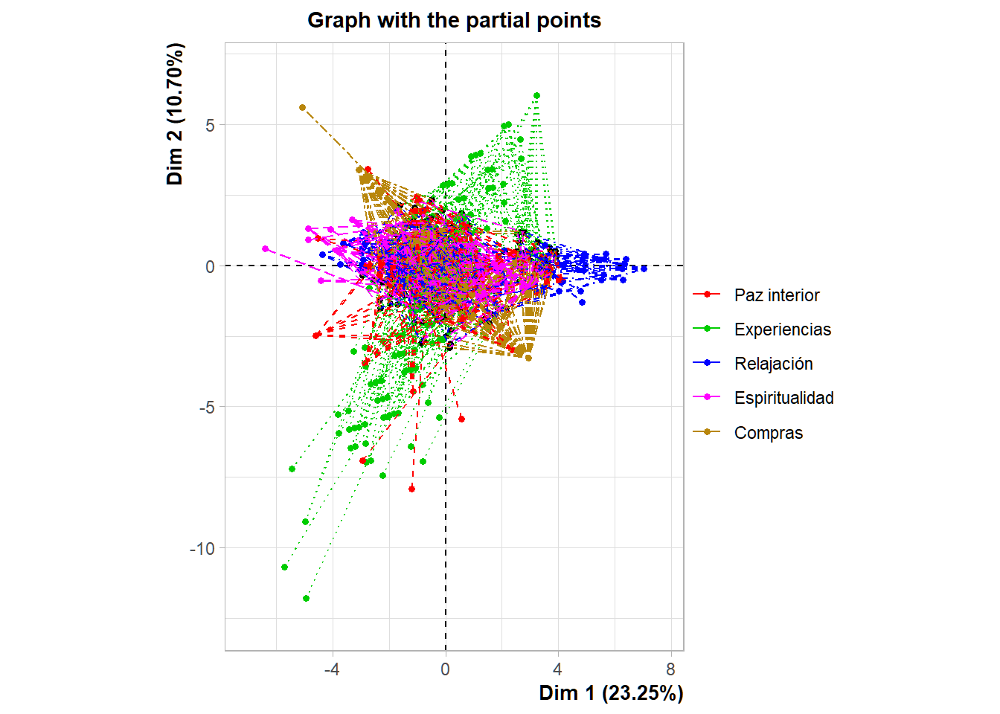

# Load the data
otuzco <- read_csv2("data/Motivaciones_Virgen_de_Otuzco_short_UTF8.csv")
otuzco <- otuzco[-c(1, 29)] # Remover columnas 1(Donde vive) y 29(Nacionalidad)Otuzco - MFA analysis
Pruebas KMO y Bartlett’s todas las variables
KMO
library(psych)
cor_matrix <- cor(otuzco, use="pairwise.complete.obs")
kmo_result <- KMO(cor_matrix)
cat("Overall MSA:", kmo_result$MSA, "\n")Overall MSA: 0.6711645 Bartlett’s test
library(psych)
bartlett_result <- cortest.bartlett(cor_matrix, n = nrow(otuzco))
p_value <- bartlett_result$p.value
cat("p_value:", p_value)p_value: 0Cronbach’s Alpha
cronbach_result <- alpha(otuzco)Some items ( 2.11.Conocer 2.12.Vacaciones 2.13.Acompañar 3.1.Satisfaccion 4.1.Volver 4.2.Recomendar 4.3.Positivo 6.Sexo 10.Profesión ) were negatively correlated with the first principal component and
probably should be reversed.
To do this, run the function again with the 'check.keys=TRUE' optionprint(cronbach_result$total) raw_alpha std.alpha G6(smc) average_r S/N ase mean
0.6408121 0.6270635 0.7486212 0.04462204 1.681422 0.02536195 3.634404
sd median_r
0.2716765 0.02714814Resultado: Alpha = 0.65 considerado cuestionable para la matriz total
Pruebas KMO y Bartlett’s de las variables motivacionales
KMO
library(psych)
cor_matrix <- cor(otuzco[2:23], use="pairwise.complete.obs")
kmo_result <- KMO(cor_matrix)
cat("Overall MSA:", kmo_result$MSA, "\n")Overall MSA: 0.7256103 Bartlett’s test
library(psych)
bartlett_result <- cortest.bartlett(cor_matrix, n = nrow(otuzco[2:23]))
p_value <- bartlett_result$p.value
cat("p_value:", p_value)p_value: 0cronbach_result <- alpha(otuzco[2:23])Some items ( 2.11.Conocer 2.12.Vacaciones 2.13.Acompañar ) were negatively correlated with the first principal component and
probably should be reversed.
To do this, run the function again with the 'check.keys=TRUE' optionprint(cronbach_result$total) raw_alpha std.alpha G6(smc) average_r S/N ase mean sd
0.7291656 0.7153601 0.7823605 0.1025248 2.513211 0.0188916 3.68383 0.3805854
median_r
0.09747519Resultado: Alpha = 0,72 considerado aceptable para la matriz de motivaciones
Conclusión: Tanto la matriz completa como la de variables motivacionales satisfacen los criterios de idoneidad de KMO y Bartlett para el análisis factorial. El Alpha de Cronbach resulta cuestionable para la matriz completa y aceptable para la matriz de variables de motivación.
Acomodar la variables motivacionales egún su grupo
otuzco <- otuzco |> relocate('2.21.Redención', .after = '2.1.Paz')
otuzco <- otuzco |> relocate('2.10.Curiosidad', .before = '2.14.Escapar')
otuzco <- otuzco |> relocate('2.8.Sitios', .after = '2.6.Tradición')Eliminar las variables motivacionales no relevantes
otuzco <- otuzco[-c(3, 4, 9, 10, 11, 12, 13,18)]# fviz_eig(otuzco, addlabels = TRUE, ncp = 15) + theme_grey()Análisis MFA
active_vars <- otuzco[, 1:15]
sup_vars <- otuzco[, 16:28]
res <- MFA(active_vars, group = c(2, 4, 4, 3, 2), type = c(rep("s", 5)), ncp = 15, sup_vars, name.group = c("Paz interior", "Experiencias", "Relajación", "Espiritualidad", "Compras "), graph = FALSE) summary(res)
Call:
MFA(base = active_vars, group = c(2, 4, 4, 3, 2), type = c(rep("s",
5)), excl = sup_vars, ncp = 15, name.group = c("Paz interior",
"Experiencias", "Relajación", "Espiritualidad", "Compras "),
graph = FALSE)
Eigenvalues
Dim.1 Dim.2 Dim.3 Dim.4 Dim.5 Dim.6 Dim.7
Variance 2.155 0.992 0.903 0.773 0.741 0.624 0.614
% of var. 23.251 10.701 9.743 8.340 7.998 6.731 6.623
Cumulative % of var. 23.251 33.953 43.696 52.037 60.034 66.765 73.388
Dim.8 Dim.9 Dim.10 Dim.11 Dim.12 Dim.13 Dim.14
Variance 0.542 0.488 0.465 0.428 0.219 0.168 0.143
% of var. 5.851 5.260 5.018 4.621 2.361 1.816 1.545
Cumulative % of var. 79.239 84.500 89.518 94.139 96.500 98.316 99.860
Dim.15
Variance 0.013
% of var. 0.140
Cumulative % of var. 100.000
Groups
Dim.1 ctr cos2 Dim.2 ctr cos2 Dim.3 ctr
Paz interior | 0.492 22.814 0.144 | 0.182 18.393 0.020 | 0.503 55.731
Experiencias | 0.308 14.304 0.048 | 0.530 53.452 0.141 | 0.126 13.943
Relajación | 0.603 27.972 0.321 | 0.041 4.101 0.001 | 0.066 7.279
Espiritualidad | 0.408 18.933 0.103 | 0.045 4.567 0.001 | 0.097 10.786
Compras | 0.344 15.977 0.119 | 0.193 19.488 0.037 | 0.111 12.261
cos2
Paz interior 0.151 |
Experiencias 0.008 |
Relajación 0.004 |
Espiritualidad 0.006 |
Compras 0.012 |
Individuals (the 10 first)
Dim.1 ctr cos2 Dim.2 ctr cos2 Dim.3 ctr
1 | 2.830 0.968 0.725 | 0.187 0.009 0.003 | -0.585 0.099
2 | -2.033 0.500 0.456 | 1.325 0.461 0.194 | 0.157 0.007
3 | -1.683 0.342 0.333 | 1.050 0.289 0.130 | 1.161 0.388
4 | -1.573 0.299 0.403 | 0.644 0.109 0.068 | -0.199 0.011
5 | -0.543 0.036 0.066 | 0.950 0.237 0.201 | 0.246 0.017
6 | -1.099 0.146 0.187 | 0.823 0.178 0.105 | -0.258 0.019
7 | 0.547 0.036 0.062 | 0.117 0.004 0.003 | 0.053 0.001
8 | -1.063 0.136 0.249 | -0.750 0.148 0.124 | -0.917 0.242
9 | -0.989 0.118 0.129 | -0.618 0.100 0.050 | -0.626 0.113
10 | -0.430 0.022 0.016 | -0.876 0.201 0.068 | -0.654 0.123
cos2
1 0.031 |
2 0.003 |
3 0.159 |
4 0.006 |
5 0.013 |
6 0.010 |
7 0.001 |
8 0.185 |
9 0.052 |
10 0.038 |
Continuous variables (the 10 first)
Dim.1 ctr cos2 Dim.2 ctr cos2 Dim.3 ctr
2.1.Paz | 0.403 6.876 0.163 | 0.378 13.160 0.143 | 0.638 41.128
2.21.Redención | 0.614 15.938 0.377 | -0.239 5.232 0.057 | -0.380 14.603
2.4.Belleza | 0.375 4.424 0.141 | 0.236 3.790 0.055 | 0.158 1.877
2.5.Misterio | 0.259 2.116 0.067 | 0.469 15.023 0.220 | -0.090 0.611
2.6.Tradición | 0.436 5.988 0.190 | 0.306 6.401 0.094 | -0.329 8.138
2.8.Sitios | 0.238 1.776 0.056 | 0.643 28.237 0.413 | -0.210 3.318
2.10.Curiosidad | 0.619 7.130 0.383 | 0.225 2.059 0.051 | -0.074 0.242
2.14.Escapar | 0.609 6.918 0.371 | -0.110 0.489 0.012 | -0.149 0.988
2.15.Estrés | 0.547 5.579 0.299 | -0.196 1.552 0.038 | -0.289 3.720
2.16.Aburrimiento | 0.669 8.344 0.448 | 0.004 0.001 0.000 | -0.229 2.328
cos2
2.1.Paz 0.407 |
2.21.Redención 0.145 |
2.4.Belleza 0.025 |
2.5.Misterio 0.008 |
2.6.Tradición 0.108 |
2.8.Sitios 0.044 |
2.10.Curiosidad 0.005 |
2.14.Escapar 0.022 |
2.15.Estrés 0.084 |
2.16.Aburrimiento 0.052 |# The results are given on the first 2 dimensions
summary(res, ncp=2)
Call:
MFA(base = active_vars, group = c(2, 4, 4, 3, 2), type = c(rep("s",
5)), excl = sup_vars, ncp = 15, name.group = c("Paz interior",
"Experiencias", "Relajación", "Espiritualidad", "Compras "),
graph = FALSE)
Eigenvalues
Dim.1 Dim.2 Dim.3 Dim.4 Dim.5 Dim.6 Dim.7
Variance 2.155 0.992 0.903 0.773 0.741 0.624 0.614
% of var. 23.251 10.701 9.743 8.340 7.998 6.731 6.623
Cumulative % of var. 23.251 33.953 43.696 52.037 60.034 66.765 73.388
Dim.8 Dim.9 Dim.10 Dim.11 Dim.12 Dim.13 Dim.14
Variance 0.542 0.488 0.465 0.428 0.219 0.168 0.143
% of var. 5.851 5.260 5.018 4.621 2.361 1.816 1.545
Cumulative % of var. 79.239 84.500 89.518 94.139 96.500 98.316 99.860
Dim.15
Variance 0.013
% of var. 0.140
Cumulative % of var. 100.000
Groups
Dim.1 ctr cos2 Dim.2 ctr cos2
Paz interior | 0.492 22.814 0.144 | 0.182 18.393 0.020 |
Experiencias | 0.308 14.304 0.048 | 0.530 53.452 0.141 |
Relajación | 0.603 27.972 0.321 | 0.041 4.101 0.001 |
Espiritualidad | 0.408 18.933 0.103 | 0.045 4.567 0.001 |
Compras | 0.344 15.977 0.119 | 0.193 19.488 0.037 |
Individuals (the 10 first)
Dim.1 ctr cos2 Dim.2 ctr cos2
1 | 2.830 0.968 0.725 | 0.187 0.009 0.003 |
2 | -2.033 0.500 0.456 | 1.325 0.461 0.194 |
3 | -1.683 0.342 0.333 | 1.050 0.289 0.130 |
4 | -1.573 0.299 0.403 | 0.644 0.109 0.068 |
5 | -0.543 0.036 0.066 | 0.950 0.237 0.201 |
6 | -1.099 0.146 0.187 | 0.823 0.178 0.105 |
7 | 0.547 0.036 0.062 | 0.117 0.004 0.003 |
8 | -1.063 0.136 0.249 | -0.750 0.148 0.124 |
9 | -0.989 0.118 0.129 | -0.618 0.100 0.050 |
10 | -0.430 0.022 0.016 | -0.876 0.201 0.068 |
Continuous variables (the 10 first)
Dim.1 ctr cos2 Dim.2 ctr cos2
2.1.Paz | 0.403 6.876 0.163 | 0.378 13.160 0.143 |
2.21.Redención | 0.614 15.938 0.377 | -0.239 5.232 0.057 |
2.4.Belleza | 0.375 4.424 0.141 | 0.236 3.790 0.055 |
2.5.Misterio | 0.259 2.116 0.067 | 0.469 15.023 0.220 |
2.6.Tradición | 0.436 5.988 0.190 | 0.306 6.401 0.094 |
2.8.Sitios | 0.238 1.776 0.056 | 0.643 28.237 0.413 |
2.10.Curiosidad | 0.619 7.130 0.383 | 0.225 2.059 0.051 |
2.14.Escapar | 0.609 6.918 0.371 | -0.110 0.489 0.012 |
2.15.Estrés | 0.547 5.579 0.299 | -0.196 1.552 0.038 |
2.16.Aburrimiento | 0.669 8.344 0.448 | 0.004 0.001 0.000 |dimdesc(res)$Dim.1
Link between the variable and the continuous variables (R-square)
=================================================================================
correlation p.value
2.16.Aburrimiento 0.6691011 3.465363e-51
2.10.Curiosidad 0.6185086 6.637740e-42
2.21.Redención 0.6138392 3.933200e-41
2.23.Productos 0.6108608 1.204863e-40
2.14.Escapar 0.6092410 2.203868e-40
2.22.Artículos 0.5529032 3.987677e-32
2.15.Estrés 0.5471103 2.307082e-31
2.18.Atmósfera 0.4702613 1.594146e-22
2.19.Cumplir deseo 0.4612291 1.264751e-21
2.6.Tradición 0.4364107 2.755189e-19
2.1.Paz 0.4031728 1.926663e-16
2.20.Respeto 0.3809311 1.043159e-14
2.4.Belleza 0.3751275 2.814868e-14
2.5.Misterio 0.2594553 2.519405e-07
2.8.Sitios 0.2376569 2.482424e-06
$Dim.2
Link between the variable and the continuous variables (R-square)
=================================================================================
correlation p.value
2.8.Sitios 0.6429298 3.631123e-46
2.5.Misterio 0.4689654 2.153919e-22
2.1.Paz 0.3784175 1.607402e-14
2.6.Tradición 0.3061166 8.967811e-10
2.4.Belleza 0.2355453 3.063740e-06
2.10.Curiosidad 0.2254816 8.131125e-06
2.14.Escapar -0.1098581 3.137614e-02
2.15.Estrés -0.1957926 1.126160e-04
2.19.Cumplir deseo -0.2377219 2.466327e-06
2.21.Redención -0.2386041 2.257422e-06
2.23.Productos -0.4293007 1.189603e-18
2.22.Artículos -0.4436207 6.032633e-20
$Dim.3
Link between the variable and the continuous variables (R-square)
=================================================================================
correlation p.value
2.1.Paz 0.6383194 2.478575e-45
2.20.Respeto 0.3653178 1.441459e-13
2.22.Artículos 0.3433794 4.568584e-12
2.23.Productos 0.3168646 2.105215e-10
2.4.Belleza 0.1581687 1.877546e-03
2.14.Escapar -0.1490223 3.421723e-03
2.8.Sitios -0.2102832 3.270065e-05
2.16.Aburrimiento -0.2287970 5.923901e-06
2.15.Estrés -0.2892176 7.794660e-09
2.6.Tradición -0.3293343 3.638640e-11
2.21.Redención -0.3803565 1.151905e-14# Graph of the groups of variables
plot(res,choix="group", cex=1.2)# Graph of the individuals
#plot(res, habillage=1, cex = 0.8)# Graph of the variables
plot(res,choix="var", invisible="quanti.sup", title="Graph of the active variables")selection = c(grep("Paz Interior",rownames(res$quanti.var$coord),fixed=TRUE),
grep("Experiencias",rownames(res$quanti.var$coord),fixed=TRUE),
grep("Relajación",rownames(res$quanti.var$coord),fixed=TRUE),
grep("Espiritualidad",rownames(res$quanti.var$coord),fixed=TRUE),
grep("Compras",rownames(res$quanti.var$coord),fixed=TRUE))
plot(res,choix="var",select=selection,invisible="quanti.sup")plot(res,choix="var", invisible="quanti", habillage="none", lab.var=FALSE,
title="Graph of the supplementary variables")# Graph with the partial points
plot(res,choix="ind", partial="all", invisible="quali", title="Graph with the partial points")
#plot(res, cex=0.8, invisible="ind", partial="all", title="Graph of the individuals")#Graph of the partial axes
plot(res,choix="axes")# Color the individuals according to a qualitative variable
#plot(res, cex=0.8, habillage=1)